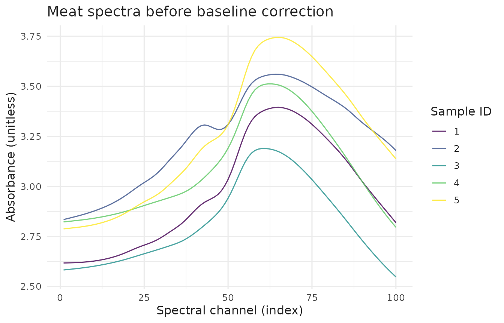
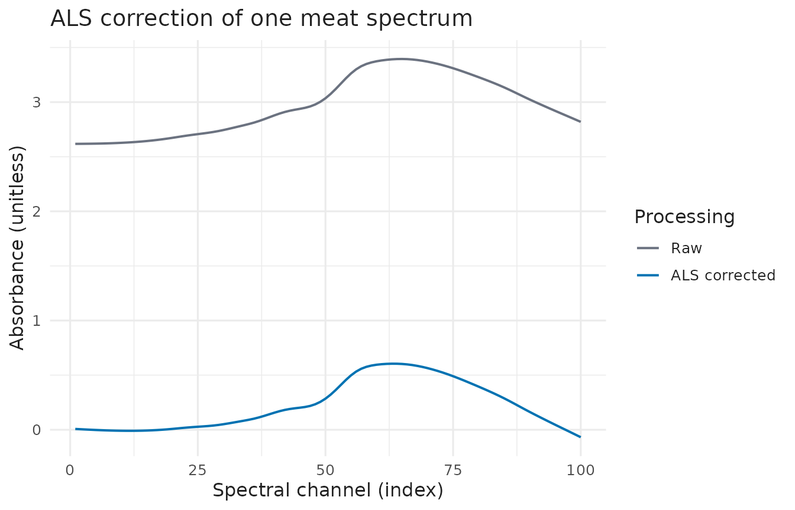
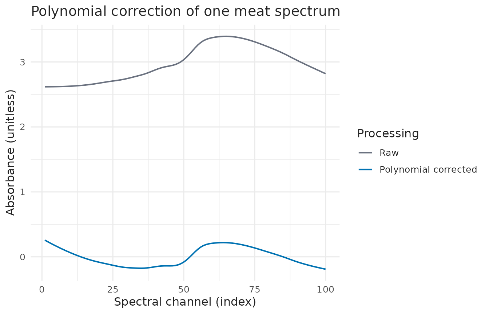

library(measure)
library(recipes)
library(dplyr)
library(tidyr)
library(ggplot2)
article_plot_theme <- theme_minimal(base_size = 12) +
theme(
text = element_text(colour = "#222222"),
plot.background = element_rect(fill = "white", colour = NA),
panel.background = element_rect(fill = "white", colour = NA),
legend.background = element_rect(fill = "white", colour = NA),
legend.key = element_rect(fill = "white", colour = NA),
strip.background = element_rect(fill = "white", colour = NA)
)
library(modeldata)
has_pybaselines <- if (requireNamespace("reticulate", quietly = TRUE)) {
isTRUE(tryCatch(
reticulate::py_module_available("pybaselines"),
error = function(e) FALSE
))
} else {
FALSE
}
if (!has_pybaselines) {
message("Skipping optional pybaselines example (not available in selected Python).")
}
#> Skipping optional pybaselines example (not available in selected Python).Introduction
A baseline is the slowly changing background in a measured signal. Baseline correction estimates that background and subtracts it. The estimate can overlap real signal features, so inspect the corrected data before using it in later analysis.
measure includes baseline recipe steps, a custom R callback, and
optional access to the Python pybaselines library.
Inspecting baseline variation
The first five spectra from modeldata::meats show
differences in level and shape. This plot alone does not separate
baseline variation from sample composition.
data(meats)
# Convert to long format for visualization
meats_viz <- meats |>
mutate(id = row_number()) |>
pivot_longer(
cols = starts_with("x_"),
names_to = "channel",
values_to = "transmittance"
) |>
mutate(channel = as.integer(gsub("x_", "", channel)))
# Plot five raw spectra
meats_viz |>
filter(id <= 5) |>
ggplot(aes(x = channel, y = transmittance, group = id, color = factor(id))) +
geom_line(alpha = 0.8) +
scale_color_viridis_d(name = "Sample ID") +
labs(
x = "Spectral channel (index)",
y = "Absorbance (unitless)",
title = "Meat spectra before baseline correction"
) +
article_plot_theme
Five NIR spectra from modeldata::meats. Color identifies each sample; the x-axis is a channel index and absorbance is unitless.
Differences between spectra may reflect baseline variation, sample composition, or both. The plot does not identify their source.
Built-in baseline correction methods
Asymmetric least squares (ALS)
step_measure_baseline_als() estimates an asymmetric
least-squares baseline for each spectrum and subtracts it from the
signal. The example uses lambda = 1e6 and
p = 0.01; inspect the corrected trace before selecting
parameters for other data.
rec_als <- recipe(water + fat + protein ~ ., data = meats) |>
step_measure_input_wide(starts_with("x_")) |>
step_measure_baseline_als(lambda = 1e6, p = 0.01)
processed_als <- bake(prep(rec_als), new_data = NULL)
raw_als <- meats |>
slice(1) |>
pivot_longer(
cols = starts_with("x_"),
names_to = "feature",
values_to = "value"
) |>
transmute(
location = as.integer(sub("^x_", "", feature)),
value,
processing = "Raw"
)
corrected_als <- processed_als |>
slice(1) |>
unnest(.measures) |>
transmute(location, value, processing = "ALS corrected")
bind_rows(raw_als, corrected_als) |>
mutate(processing = factor(processing, levels = c("Raw", "ALS corrected"))) |>
ggplot(aes(x = location, y = value, colour = processing)) +
geom_line(linewidth = 0.7) +
scale_colour_manual(
name = "Processing",
values = c("Raw" = "#6B7280", "ALS corrected" = "#0072B2")
) +
labs(
x = "Spectral channel (index)",
y = "Absorbance (unitless)",
title = "ALS correction of one meat spectrum"
) +
article_plot_theme
One meat spectrum before and after ALS correction with lambda = 1e6 and p = 0.01. Both traces use the same 100 spectral channels.
Key parameters:
-
lambda: Smoothness penalty (higher = smoother baseline). Try 10^4 to 10^9. -
p: Asymmetry parameter (0-1). Lower values fit below the signal. Try 0.001-0.1.
Polynomial baseline
step_measure_baseline_poly() fits a polynomial across
the spectrum and subtracts the fitted curve. The example uses degree 2;
inspect the corrected signal to check whether the fit has altered
features relevant to your analysis.
rec_poly <- recipe(water + fat + protein ~ ., data = meats) |>
step_measure_input_wide(starts_with("x_")) |>
step_measure_baseline_poly(degree = 2)
processed_poly <- bake(prep(rec_poly), new_data = NULL)
raw_poly <- meats |>
slice(1) |>
pivot_longer(
cols = starts_with("x_"),
names_to = "feature",
values_to = "value"
) |>
transmute(
location = as.integer(sub("^x_", "", feature)),
value,
processing = "Raw"
)
corrected_poly <- processed_poly |>
slice(1) |>
unnest(.measures) |>
transmute(location, value, processing = "Polynomial corrected")
bind_rows(raw_poly, corrected_poly) |>
mutate(processing = factor(processing, levels = c("Raw", "Polynomial corrected"))) |>
ggplot(aes(x = location, y = value, colour = processing)) +
geom_line(linewidth = 0.7) +
scale_colour_manual(
name = "Processing",
values = c("Raw" = "#6B7280", "Polynomial corrected" = "#0072B2")
) +
labs(
x = "Spectral channel (index)",
y = "Absorbance (unitless)",
title = "Polynomial correction of one meat spectrum"
) +
article_plot_theme
One meat spectrum before and after degree-2 polynomial baseline correction. Both traces use the same 100 spectral channels.
Robust fitting baseline
step_measure_baseline_rf() estimates a baseline with
locally weighted regression and iterative reweighting. Check its fit on
spectra with the signal shapes and noise levels in your data.
rec_rf <- recipe(water + fat + protein ~ ., data = meats) |>
step_measure_input_wide(starts_with("x_")) |>
step_measure_baseline_rf(span = 0.5) |>
step_measure_output_wide(prefix = "nir_")
processed_rf <- bake(prep(rec_rf), new_data = NULL)
#> Warning: Values from `value` are not uniquely identified; output will contain list-cols.
#> • Use `values_fn = list` to suppress this warning.
#> • Use `values_fn = {summary_fun}` to summarise duplicates.
#> • Use the following dplyr code to identify duplicates.
#> {data} |>
#> dplyr::summarise(n = dplyr::n(), .by = c(water, fat, protein, location)) |>
#> dplyr::filter(n > 1L)Detrending
step_measure_detrend() removes polynomial trends from
spectra. The simplest baseline correction - just removes the overall
trend.
rec_detrend <- recipe(water + fat + protein ~ ., data = meats) |>
step_measure_input_wide(starts_with("x_")) |>
step_measure_detrend(degree = 1) |>
step_measure_output_wide(prefix = "nir_")
processed_detrend <- bake(prep(rec_detrend), new_data = NULL)
#> Warning: Values from `value` are not uniquely identified; output will contain list-cols.
#> • Use `values_fn = list` to suppress this warning.
#> • Use `values_fn = {summary_fun}` to summarise duplicates.
#> • Use the following dplyr code to identify duplicates.
#> {data} |>
#> dplyr::summarise(n = dplyr::n(), .by = c(water, fat, protein, location)) |>
#> dplyr::filter(n > 1L)GPC/SEC baseline correction
The core step_measure_baseline_gpc() has been
superseded. For SEC/GPC data, use
measure.sec::step_sec_baseline(), which is maintained in
the companion package. The synthetic example runs when
measure.sec is installed; it is skipped with a message
otherwise.
sec_data <- tibble::tibble(
sample_id = rep(1:3, each = 20),
concentration = rep(c(10, 25, 50), each = 20),
time = rep(seq(0, 19), 3),
signal = rep(
seq(0.1, 0.2, length.out = 20) +
c(0, 0, 0, 0, 1, 2, 3, 2, 1, 0.3, rep(0, 10)),
3
) + rep(c(0, 0.1, 0.2), each = 20)
)
if (requireNamespace("measure.sec", quietly = TRUE)) {
sec_fit <- recipe(concentration ~ ., data = sec_data) |>
update_role(sample_id, new_role = "id") |>
step_measure_input_long(
signal,
location = vars(time),
col_name = "ri"
) |>
measure.sec::step_sec_baseline(
measures = "ri",
left_frac = 0.1,
right_frac = 0.1
) |>
prep()
bake(sec_fit, new_data = NULL) |>
dplyr::select(sample_id, concentration)
} else {
message("SEC example skipped: install the optional measure.sec package.")
}
#> SEC example skipped: install the optional measure.sec package.Custom baseline functions
step_measure_baseline_custom() lets you provide any R
function for baseline estimation. Your function receives a
measure_tbl (tibble with location and
value columns) and should return a numeric vector of
baseline values.
Using a function
# Simple moving minimum baseline
moving_min_baseline <- function(x, window = 51) {
y <- x$value
n <- length(y)
baseline <- numeric(n)
half_win <- window %/% 2
for (i in seq_len(n)) {
start <- max(1, i - half_win)
end <- min(n, i + half_win)
baseline[i] <- min(y[start:end], na.rm = TRUE)
}
baseline
}
rec_custom <- recipe(water + fat + protein ~ ., data = meats) |>
step_measure_input_wide(starts_with("x_")) |>
step_measure_baseline_custom(.fn = moving_min_baseline, window = 101) |>
step_measure_output_wide(prefix = "nir_")
processed_custom <- bake(prep(rec_custom), new_data = NULL)
#> Warning: Values from `value` are not uniquely identified; output will contain list-cols.
#> • Use `values_fn = list` to suppress this warning.
#> • Use `values_fn = {summary_fun}` to summarise duplicates.
#> • Use the following dplyr code to identify duplicates.
#> {data} |>
#> dplyr::summarise(n = dplyr::n(), .by = c(water, fat, protein, location)) |>
#> dplyr::filter(n > 1L)Using a formula
For quick one-liners, use the formula interface where .x
is the measure_tbl:
# LOESS baseline using formula
rec_loess <- recipe(water + fat + protein ~ ., data = meats) |>
step_measure_input_wide(starts_with("x_")) |>
step_measure_baseline_custom(
.fn = ~ stats::loess(.x$value ~ .x$location, span = span)$fitted,
span = 0.3
) |>
step_measure_output_wide(prefix = "nir_")
processed_loess <- bake(prep(rec_loess), new_data = NULL)
#> Warning: Values from `value` are not uniquely identified; output will contain list-cols.
#> • Use `values_fn = list` to suppress this warning.
#> • Use `values_fn = {summary_fun}` to summarise duplicates.
#> • Use the following dplyr code to identify duplicates.
#> {data} |>
#> dplyr::summarise(n = dplyr::n(), .by = c(water, fat, protein, location)) |>
#> dplyr::filter(n > 1L)Extracting the baseline
With step_measure_baseline_custom() and
step_measure_baseline_py(), set
subtract = FALSE to get the baseline itself instead of the
corrected signal:
# Use custom baseline with subtract = FALSE to extract the baseline
rec_extract <- recipe(water + fat + protein ~ ., data = meats) |>
step_measure_input_wide(starts_with("x_")) |>
step_measure_baseline_custom(
.fn = ~ stats::loess(.x$value ~ .x$location, span = 0.5)$fitted,
subtract = FALSE
)
baselines <- bake(prep(rec_extract), new_data = NULL)
# The .measures column now contains the estimated baselines
baselines |>
slice(1) |>
unnest(.measures) |>
head()
#> # A tibble: 6 × 5
#> water fat protein location value
#> <dbl> <dbl> <dbl> <dbl> <dbl>
#> 1 60.5 22.5 16.7 1 2.62
#> 2 60.5 22.5 16.7 2 2.62
#> 3 60.5 22.5 16.7 3 2.62
#> 4 60.5 22.5 16.7 4 2.62
#> 5 60.5 22.5 16.7 5 2.62
#> 6 60.5 22.5 16.7 6 2.62Python pybaselines integration
step_measure_baseline_py() calls baseline methods from
the Python pybaselines
library.
Setup
First, make reticulate available in R and declare pybaselines for the Python environment used by reticulate. These commands are for you to run when you want to use the backend. The availability check initializes the selected Python runtime; reticulate may create a managed environment according to its configuration. measure preserves an explicitly selected interpreter:
if (!requireNamespace("reticulate", quietly = TRUE)) {
install.packages("reticulate")
}
reticulate::py_require("pybaselines")Using pybaselines methods
py_small <- meats[1:5, ]
rec_py <- recipe(water + fat + protein ~ ., data = py_small) |>
step_measure_input_wide(starts_with("x_")) |>
step_measure_baseline_py(method = "asls", lam = 1e6, p = 0.01) |>
step_measure_output_wide(prefix = "nir_")
py_fit <- prep(rec_py)
py_processed <- bake(py_fit, new_data = NULL)
py_processed[, 1:6]Available pybaselines methods
| Category | Methods |
|---|---|
| Whittaker |
asls, iasls, airpls,
arpls, drpls, psalsa
|
| Polynomial |
poly, modpoly, imodpoly,
loess, quant_reg
|
| Morphological |
mor, imor, rolling_ball,
tophat
|
| Spline |
pspline_asls, pspline_airpls,
mixture_model
|
| Smooth |
snip, swima,
noise_median
|
| Classification |
dietrich, golotvin,
fastchrom
|
See the pybaselines documentation for the full list and parameter details.
Using derivatives for baseline correction
Savitzky-Golay derivatives can reduce constant or linear baseline components. Derivatives also change the signal scale and can change peak shapes, so inspect them before interpretation.
# A first derivative suppresses a constant offset
rec_d1 <- recipe(water + fat + protein ~ ., data = meats) |>
step_measure_input_wide(starts_with("x_")) |>
step_measure_savitzky_golay(window_side = 7, differentiation_order = 1) |>
step_measure_output_wide(prefix = "nir_")
# A second derivative suppresses a linear trend
rec_d2 <- recipe(water + fat + protein ~ ., data = meats) |>
step_measure_input_wide(starts_with("x_")) |>
step_measure_savitzky_golay(window_side = 7, differentiation_order = 2) |>
step_measure_output_wide(prefix = "nir_")Choosing a method
| Method | Operation | Tunable | Notes |
|---|---|---|---|
step_measure_baseline_als() |
Estimates and subtracts an asymmetric least-squares baseline | Yes | Tune lambda and p for the signal |
step_measure_baseline_poly() |
Fits and subtracts a polynomial | Yes |
degree sets polynomial order |
step_measure_baseline_rf() |
Fits a locally weighted baseline | Yes |
span controls the local fit |
step_measure_detrend() |
Removes a polynomial trend | Yes |
degree sets trend order |
measure.sec::step_sec_baseline() |
Processes SEC/GPC traces | No | Provided by the companion package |
step_measure_baseline_custom() |
Calls a supplied R function | Optional | The function returns baseline values |
step_measure_baseline_py() |
Calls a pybaselines method | Yes | Requires the Python backend |
step_measure_savitzky_golay() |
Smooths or differentiates signals | Yes | Derivatives change signal scale |
Hyperparameter tuning
Most baseline correction steps are tunable with the tidymodels tuning framework:
rec_tunable <- recipe(water ~ ., data = meats) |>
step_measure_input_wide(starts_with("x_")) |>
step_measure_baseline_als(
lambda = tune::tune(),
p = tune::tune()
) |>
step_measure_output_wide(prefix = "nir_")
tune::tunable(rec_tunable)
#> # A tibble: 2 × 5
#> name call_info source component component_id
#> <chr> <list> <chr> <chr> <chr>
#> 1 lambda <named list [2]> recipe step_measure_baseline_als measure_baseline_als…
#> 2 p <named list [2]> recipe step_measure_baseline_als measure_baseline_als…step_measure_baseline_custom() can expose callback
arguments to the tuning framework. Declare a parameter in
tunable, capture tune::tune() in the matching
callback argument, then extract and finalize it through the public
tuning API:
rec_custom_tuned <- recipe(water + fat + protein ~ ., data = meats_long) |>
update_role(id, new_role = "id") |>
step_measure_input_long(transmittance, location = vars(channel)) |>
step_measure_baseline_custom(
.fn = ~ {
fit <- lm(.x$value ~ poly(.x$location, degree))
predict(fit)
},
degree = tune::tune(id = "baseline_degree"),
tunable = list(
degree = list(
pkg = "dials",
fun = "degree_int",
range = c(1L, 5L)
)
)
)
custom_parameters <- tune::extract_parameter_set_dials(rec_custom_tuned)
custom_parameters
#> Collection of 1 parameters for tuning
#>
#> identifier type object
#> baseline_degree degree nparam[+]
#>
rec_custom_final <- tune::finalize_recipe(
rec_custom_tuned,
list(baseline_degree = 2L)
)
rec_custom_fixed <- recipe(water + fat + protein ~ ., data = meats_long) |>
update_role(id, new_role = "id") |>
step_measure_input_long(transmittance, location = vars(channel)) |>
step_measure_baseline_custom(
.fn = ~ {
fit <- lm(.x$value ~ poly(.x$location, degree))
predict(fit)
},
degree = 2L
)
all.equal(
bake(prep(rec_custom_final), new_data = NULL)$.measures,
bake(prep(rec_custom_fixed), new_data = NULL)$.measures
)
#> [1] TRUEComplete preprocessing pipeline
This recipe combines baseline estimation, sample-wise normalization, and a first derivative. Each step changes the signal, so inspect intermediate output when deciding whether the sequence suits the analysis:
rec_complete <- recipe(water + fat + protein ~ ., data = meats) |>
step_measure_input_wide(starts_with("x_")) |>
# Baseline correction
step_measure_baseline_als(lambda = 1e6, p = 0.01) |>
# Scatter correction
step_measure_snv() |>
# Smoothing with mild derivative
step_measure_savitzky_golay(window_side = 5, differentiation_order = 1) |>
# Output for modeling
step_measure_output_wide(prefix = "nir_")
final_data <- bake(prep(rec_complete), new_data = NULL)
#> Warning: Values from `value` are not uniquely identified; output will contain list-cols.
#> • Use `values_fn = list` to suppress this warning.
#> • Use `values_fn = {summary_fun}` to summarise duplicates.
#> • Use the following dplyr code to identify duplicates.
#> {data} |>
#> dplyr::summarise(n = dplyr::n(), .by = c(water, fat, protein, location)) |>
#> dplyr::filter(n > 1L)
final_data[1:5, 1:8]
#> # A tibble: 5 × 8
#> water fat protein nir_06 nir_07 nir_08 nir_09 nir_10
#> <dbl> <dbl> <dbl> <list> <list> <list> <list> <list>
#> 1 60.5 22.5 16.7 <dbl [1]> <dbl [1]> <dbl [1]> <dbl [1]> <dbl [1]>
#> 2 46 40.1 13.5 <dbl [1]> <dbl [1]> <dbl [1]> <dbl [1]> <dbl [1]>
#> 3 71 8.4 20.5 <dbl [1]> <dbl [1]> <dbl [1]> <dbl [1]> <dbl [1]>
#> 4 72.8 5.9 20.7 <dbl [2]> <dbl [2]> <dbl [2]> <dbl [2]> <dbl [2]>
#> 5 58.3 25.5 15.5 <dbl [2]> <dbl [2]> <dbl [2]> <dbl [2]> <dbl [2]>See also
- Getting Started - Learn the fundamentals of measure
- Preprocessing Reference - Complete guide to all preprocessing techniques
- Integrating with tidymodels - Use baseline correction in modeling workflows